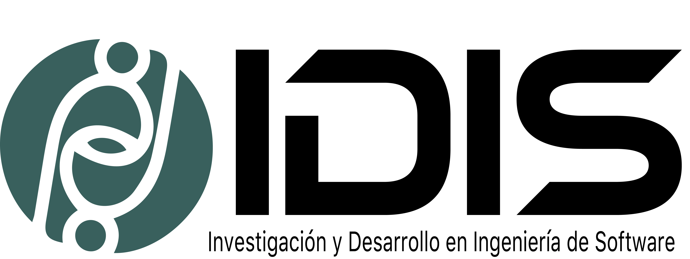
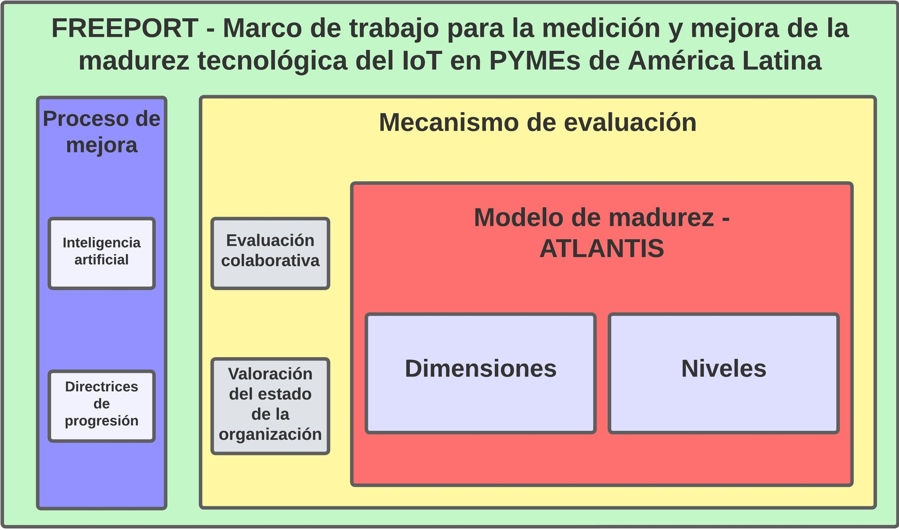

Systematic literature review on mechanisms to measure the technological maturity of the Internet of Things in enterprises
Autores: Andrés Felipe Solis Pino, Pablo H. Ruiz, Alicia Mon, Cesar Alberto Collazos
Revista: Internet of Things (2024)

Framework para estimar y mejorar la madurez tecnológica del IoT en PYMEs
Selecciona tu punto de partida:
FREEPORT es el marco de trabajo (Framework) diseñado para evaluar la madurez tecnológica del IoT, mientras que ATLANTIS es el modelo de madurez específico que lo fundamenta.

Es importante destacar que FREEPORT es el marco de trabajo (Framework) integral, mientras que ATLANTIS es el modelo de madurez específico que lo sustenta. Juntos, permiten a las empresas industriales evaluar su estado actual y trazar una ruta hacia la mejora de la tecnología IoT.
FREEPORT se compone de tres elementos fundamentales:
El Framework FREEPORT no es solo un modelo teórico, sino una herramienta práctica diseñada para generar valor real. Sus principales fortalezas son:
El modelo analiza la empresa desde tres perspectivas críticas para garantizar un diagnóstico holístico de la madurez IoT.
Evalúa la estrategia empresarial, la cultura de innovación y la preparación de la estructura interna para adoptar y escalar soluciones de Internet de las Cosas.
Analiza la infraestructura física, los dispositivos, la conectividad y las plataformas de software que soportan el ecosistema IoT.
Considera las capacidades, la formación continua y la adaptación del equipo humano ante el cambio tecnológico, clave para la sostenibilidad del proyecto.
ATLANTIS evalúa sistemáticamente siete áreas clave que cubren todo el ciclo de vida y la gestión técnica del IoT.
Despliegue, configuración y mantenimiento preventivo y correctivo de los dispositivos IoT en campo.
Protocolos de comunicación, topologías de red y fiabilidad del flujo de datos entre dispositivos y nube.
Optimización del procesamiento y almacenamiento de datos para garantizar latencia mínima y eficiencia.
Conexión fluida del IoT con los sistemas de gestión existentes como ERP, CRM o sistemas de manufactura.
Políticas, cifrado y prácticas para proteger la integridad del sistema y la privacidad de los datos.
Aseguramiento de que las soluciones IoT cumplen con regulaciones, estándares y normas éticas.
Adaptación de la tecnología a las necesidades específicas del negocio para maximizar el retorno de inversión.
Una hoja de ruta progresiva que permite a las PYMEs identificar su posición actual y trazar el camino hacia la excelencia.
Capacidades IoT mínimas o nulas. La empresa opera con procesos manuales y sin integración de datos en tiempo real.
Implementaciones aisladas. Se adoptan soluciones IoT como respuesta a problemas puntuales, sin una visión estratégica global.
Enfoque sistematizado. El IoT está integrado de manera planificada para mejorar la eficiencia operativa y la toma de decisiones.
Liderazgo estratégico. La empresa utiliza el IoT para transformar su modelo de negocio y obtener una ventaja competitiva sostenible.
Para garantizar una medición imparcial y precisa, FREEPORT integra las perspectivas de los tres roles fundamentales de la organización.
Rol: Gerente / CEO. Aporta la perspectiva de negocio, el retorno de inversión y la alineación con los objetivos estratégicos.
Rol: CTO / Jefe de TI. Evalúa la arquitectura, la seguridad, la interoperabilidad y el soporte técnico.
Rol: Técnico / Ingeniero de Campo. Proporciona la visión del día a día sobre el funcionamiento y mantenimiento de los activos.
¡Empieza ahora y descubre el nivel de madurez del IoT de tu empresa con FREEPORT!
Comience su viaje hacia la madurez digital. Los campos marcados con * son obligatorios.
Ingrese el ID único de su empresa para continuar con el proceso.
Investigación y desarrollo que respalda el modelo FREEPORT.
Autores: Andrés Felipe Solis Pino, Pablo H. Ruiz, Alicia Mon, Cesar Alberto Collazos
Revista: Internet of Things (2024)
Autores: Andrés Felipe Solis Pino, Pablo H. Ruiz, Alicia Mon, Cesar Alberto Collazos
Revista: Internet of Things (2024)
Autores: Andrés Felipe Solis Pino, Pablo H. Ruiz, Alicia Mon, Cesar Alberto Collazos
Revista: International Journal of Electrical and Computer Engineering (2024)
Autores: Andrés Felipe Solis Pino, Pablo H. Ruiz, Alicia Mon, Cesar Alberto Collazos, Fernando Moreira
Revista: Applied Sciences (2024)
Autores: Andrés Felipe Solis Pino, Pablo H. Ruiz, Alicia Mon, Cesar Alberto Collazos
Revista: Internet of Things (2024)
Somos un equipo interdisciplinario de profesionales de Colombia y Argentina, dedicados a impulsar la adopción e implementación de las tecnologías de la Industria 4.0 en Latinoamérica.
Nuestra colaboración se desarrolla en el marco del Grupo de Investigación y Desarrollo en Ingeniería de Software (IDIS) de la Universidad del Cauca y el Grupo GIS de la Universidad Nacional de La Matanza.
Este proyecto es posible gracias al apoyo del Ministerio de Ciencia, Tecnología e Innovación de Colombia, a través de su convocatoria de "Formación de capital humano de alto nivel para promover el liderazgo social comunitario y afrontar la Cuarta Revolución Industrial en el departamento del Cauca". Esta valiosa iniciativa financia los estudios de doctorado de Andrés Felipe Solís Pino, bajo la tutela principal del Dr. César Alberto Collazos y la codirección de la Dra. Alicia Mon (Universidad Nacional de La Matanza, Argentina) y el Dr. Pablo Ruiz (Universidad del Cauca, Colombia).
La investigación se enmarca en el trabajo doctoral de Andrés Felipe Solís Pino, titulado "Marco de trabajo para la medición y mejora de la madurez tecnológica del Internet de las Cosas en pequeñas y medianas empresas de América Latina".